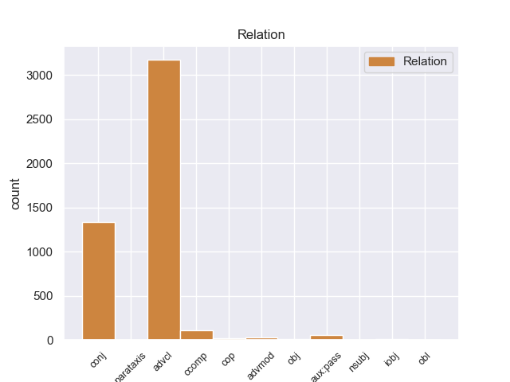
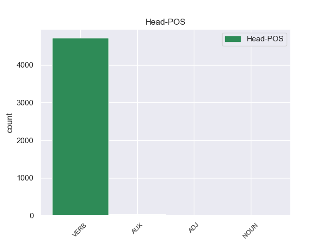
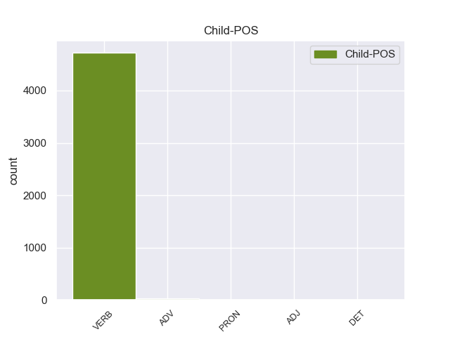

Distribution of features within this leaf



Agreement Rules sorted by frequency.
- When the dependent token is the adverbial clause modifier(advcl) of the head token, and the dependent token is VERB.
1 En _ _ _ _ 0 _ _ _
2 1991 _ _ _ _ 0 _ _ _
3 , _ _ _ _ 0 _ _ _
4 como _ _ _ _ 0 _ _ _
5 ya _ _ _ _ 0 _ _ _
6 está _ _ _ _ 0 _ _ _
7 indicado _ _ _ _ 0 _ _ _
8 en _ _ _ _ 0 _ _ _
9 el _ _ _ _ 0 _ _ _
10 párrafo _ _ _ _ 0 _ _ _
11 anterior _ _ _ _ 0 _ _ _
12 , _ _ _ _ 0 _ _ _
13 se _ _ _ _ 0 _ _ _
14 creó crear VERB _ Mood=Ind|Number=Sing|Person=3|Tense=Past|VerbForm=Fin 0 _ _ _
15 un _ _ _ _ 0 _ _ _
16 equipo _ _ _ _ 0 _ _ _
17 ad _ _ _ _ 0 _ _ _
18 hoc _ _ _ _ 0 _ _ _
19 para _ _ _ _ 0 _ _ _
20 averiguar _ _ _ _ 0 _ _ _
21 como _ _ _ _ 0 _ _ _
22 se _ _ _ _ 0 _ _ _
23 podía _ _ _ _ 0 _ _ _
24 desarrollar _ _ _ _ 0 _ _ _
25 el _ _ _ _ 0 _ _ _
26 Dialogo _ _ _ _ 0 _ _ _
27 Social _ _ _ _ 0 _ _ _
28 , _ _ _ _ 0 _ _ _
29 este _ _ _ _ 0 _ _ _
30 equipo _ _ _ _ 0 _ _ _
31 estaba _ _ _ _ 0 _ _ _
32 formado formado VERB _ Gender=Masc|Number=Sing|Tense=Past|VerbForm=Part 14 advcl _ _
33 por _ _ _ _ 0 _ _ _
34 representantes _ _ _ _ 0 _ _ _
35 de _ _ _ _ 0 _ _ _
36 todas _ _ _ _ 0 _ _ _
37 las _ _ _ _ 0 _ _ _
38 organizaciones _ _ _ _ 0 _ _ _
39 relacionadas _ _ _ _ 0 _ _ _
40 con _ _ _ _ 0 _ _ _
41 CES _ _ _ _ 0 _ _ _
42 , _ _ _ _ 0 _ _ _
43 UNICE _ _ _ _ 0 _ _ _
44 y _ _ _ _ 0 _ _ _
45 CEEP _ _ _ _ 0 _ _ _
46 ; _ _ _ _ 0 _ _ _
1 Esta _ _ _ _ 0 _ _ _
2 compra _ _ _ _ 0 _ _ _
3 pone poner VERB _ Mood=Ind|Number=Sing|Person=3|Tense=Pres|VerbForm=Fin 0 _ _ _
4 fin _ _ _ _ 0 _ _ _
5 a _ _ _ _ 0 _ _ _
6 meses _ _ _ _ 0 _ _ _
7 de _ _ _ _ 0 _ _ _
8 negociaciones _ _ _ _ 0 _ _ _
9 y _ _ _ _ 0 _ _ _
10 refuerza refuerza VERB _ Mood=Ind|Number=Sing|Person=3|Tense=Pres|VerbForm=Fin 3 conj _ _
11 la _ _ _ _ 0 _ _ _
12 estrategia _ _ _ _ 0 _ _ _
13 de _ _ _ _ 0 _ _ _
14 crecimiento _ _ _ _ 0 _ _ _
15 implantada _ _ _ _ 0 _ _ _
16 por _ _ _ _ 0 _ _ _
17 la _ _ _ _ 0 _ _ _
18 dirección _ _ _ _ 0 _ _ _
19 de _ _ _ _ 0 _ _ _
20 el _ _ _ _ 0 _ _ _
21 grupo _ _ _ _ 0 _ _ _
22 además _ _ _ _ 0 _ _ _
23 de _ _ _ _ 0 _ _ _
24 añadir _ _ _ _ 0 _ _ _
25 un _ _ _ _ 0 _ _ _
26 complejo _ _ _ _ 0 _ _ _
27 de _ _ _ _ 0 _ _ _
28 calidad _ _ _ _ 0 _ _ _
29 superior _ _ _ _ 0 _ _ _
30 a _ _ _ _ 0 _ _ _
31 su _ _ _ _ 0 _ _ _
32 oferta _ _ _ _ 0 _ _ _
33 . _ _ _ _ 0 _ _ _
1 Sólo _ _ _ _ 0 _ _ _
2 CiU _ _ _ _ 0 _ _ _
3 ha _ _ _ _ 0 _ _ _
4 dicho dicho VERB _ Gender=Masc|Number=Sing|Tense=Past|VerbForm=Part 0 _ _ _
5 que _ _ _ _ 0 _ _ _
6 la _ _ _ _ 0 _ _ _
7 moción _ _ _ _ 0 _ _ _
8 de _ _ _ _ 0 _ _ _
9 el _ _ _ _ 0 _ _ _
10 PP _ _ _ _ 0 _ _ _
11 era _ _ _ _ 0 _ _ _
12 " _ _ _ _ 0 _ _ _
13 oportuna _ _ _ _ 0 _ _ _
14 " _ _ _ _ 0 _ _ _
15 pero _ _ _ _ 0 _ _ _
16 se _ _ _ _ 0 _ _ _
17 ha _ _ _ _ 0 _ _ _
18 abstenido abstenido VERB _ Gender=Masc|Number=Sing|Tense=Past|VerbForm=Part 4 ccomp _ _
19 " _ _ _ _ 0 _ _ _
20 en _ _ _ _ 0 _ _ _
21 coherencia _ _ _ _ 0 _ _ _
22 " _ _ _ _ 0 _ _ _
23 con _ _ _ _ 0 _ _ _
24 su _ _ _ _ 0 _ _ _
25 propia _ _ _ _ 0 _ _ _
26 propuesta _ _ _ _ 0 _ _ _
27 de _ _ _ _ 0 _ _ _
28 Pacto _ _ _ _ 0 _ _ _
29 de _ _ _ _ 0 _ _ _
30 Estado _ _ _ _ 0 _ _ _
31 contra _ _ _ _ 0 _ _ _
32 la _ _ _ _ 0 _ _ _
33 crisis _ _ _ _ 0 _ _ _
34 presentada _ _ _ _ 0 _ _ _
35 ayer _ _ _ _ 0 _ _ _
36 . _ _ _ _ 0 _ _ _
1 Esa _ _ _ _ 0 _ _ _
2 iniciativa _ _ _ _ 0 _ _ _
3 , _ _ _ _ 0 _ _ _
4 como _ _ _ _ 0 _ _ _
5 otras _ _ _ _ 0 _ _ _
6 surgidas _ _ _ _ 0 _ _ _
7 en _ _ _ _ 0 _ _ _
8 las _ _ _ _ 0 _ _ _
9 últimas _ _ _ _ 0 _ _ _
10 semanas _ _ _ _ 0 _ _ _
11 , _ _ _ _ 0 _ _ _
12 ha _ _ _ _ 0 _ _ _
13 estado ester VERB _ Gender=Masc|Number=Sing|Tense=Past|VerbForm=Part 14 aux:pass _ _
14 alentada alentada VERB _ Gender=Masc|Number=Sing|Tense=Past|VerbForm=Part 0 _ _ _
15 por _ _ _ _ 0 _ _ _
16 el _ _ _ _ 0 _ _ _
17 debate _ _ _ _ 0 _ _ _
18 en _ _ _ _ 0 _ _ _
19 la _ _ _ _ 0 _ _ _
20 Red. _ _ _ _ 0 _ _ _
1 En _ _ _ _ 0 _ _ _
2 realidad _ _ _ _ 0 _ _ _
3 sus _ _ _ _ 0 _ _ _
4 atrevidos _ _ _ _ 0 _ _ _
5 planes _ _ _ _ 0 _ _ _
6 de _ _ _ _ 0 _ _ _
7 reformas _ _ _ _ 0 _ _ _
8 , _ _ _ _ 0 _ _ _
9 que _ _ _ _ 0 _ _ _
10 Necker _ _ _ _ 0 _ _ _
11 realizó _ _ _ _ 0 _ _ _
12 posteriormente _ _ _ _ 0 _ _ _
13 , _ _ _ _ 0 _ _ _
14 podrían _ _ _ _ 0 _ _ _
15 seguramente seguramente ADV _ Gender=Masc|Number=Sing|Tense=Past|VerbForm=Part 17 advmod _ _
16 haber _ _ _ _ 0 _ _ _
17 salvado salvado VERB _ Gender=Masc|Number=Sing|Tense=Past|VerbForm=Part 0 _ _ _
18 la _ _ _ _ 0 _ _ _
19 monarquía _ _ _ _ 0 _ _ _
20 si _ _ _ _ 0 _ _ _
21 hubieran _ _ _ _ 0 _ _ _
22 sido _ _ _ _ 0 _ _ _
23 apoyadas _ _ _ _ 0 _ _ _
24 por _ _ _ _ 0 _ _ _
25 el _ _ _ _ 0 _ _ _
26 rey _ _ _ _ 0 _ _ _
27 . _ _ _ _ 0 _ _ _
1 La _ _ _ _ 0 _ _ _
2 primera _ _ _ _ 0 _ _ _
3 vez _ _ _ _ 0 _ _ _
4 , _ _ _ _ 0 _ _ _
5 tenía teener VERB _ Mood=Ind|Number=Sing|Person=3|Tense=Past|VerbForm=Fin 0 _ _ _
6 un _ _ _ _ 0 _ _ _
7 presupuesto _ _ _ _ 0 _ _ _
8 de _ _ _ _ 0 _ _ _
9 700 _ _ _ _ 0 _ _ _
10 € _ _ _ _ 0 _ _ _
11 en _ _ _ _ 0 _ _ _
12 el _ _ _ _ 0 _ _ _
13 servicio _ _ _ _ 0 _ _ _
14 oficial _ _ _ _ 0 _ _ _
15 ( _ _ _ _ 0 _ _ _
16 te _ _ _ _ 0 _ _ _
17 lo _ _ _ _ 0 _ _ _
18 cambio _ _ _ _ 0 _ _ _
19 todo _ _ _ _ 0 _ _ _
20 y _ _ _ _ 0 _ _ _
21 soluciono _ _ _ _ 0 _ _ _
22 el _ _ _ _ 0 _ _ _
23 problema _ _ _ _ 0 _ _ _
24 ) _ _ _ _ 0 _ _ _
25 , _ _ _ _ 0 _ _ _
26 y _ _ _ _ 0 _ _ _
27 en _ _ _ _ 0 _ _ _
28 Pinauto _ _ _ _ 0 _ _ _
29 me _ _ _ _ 0 _ _ _
30 lo _ _ _ _ 0 _ _ _
31 solucionaron solucionaron VERB _ Mood=Ind|Number=Sing|Person=3|Tense=Past|VerbForm=Fin 5 obj _ _
32 por _ _ _ _ 0 _ _ _
33 unos _ _ _ _ 0 _ _ _
34 200 _ _ _ _ 0 _ _ _
35 € _ _ _ _ 0 _ _ _
36 , _ _ _ _ 0 _ _ _
37 cambiando _ _ _ _ 0 _ _ _
38 sólo _ _ _ _ 0 _ _ _
39 lo _ _ _ _ 0 _ _ _
40 necesario _ _ _ _ 0 _ _ _
41 . _ _ _ _ 0 _ _ _
1 Se _ _ _ _ 0 _ _ _
2 piensa piensa VERB _ Mood=Ind|Number=Sing|Person=3|Tense=Pres|VerbForm=Fin 0 _ _ _
3 que _ _ _ _ 0 _ _ _
4 el _ _ _ _ 0 _ _ _
5 nombre _ _ _ _ 0 _ _ _
6 de _ _ _ _ 0 _ _ _
7 Sumba _ _ _ _ 0 _ _ _
8 proviene proviene VERB _ Mood=Ind|Number=Sing|Person=3|Tense=Pres|VerbForm=Fin 2 cop _ _
9 de _ _ _ _ 0 _ _ _
10 el _ _ _ _ 0 _ _ _
11 nórdico _ _ _ _ 0 _ _ _
12 antiguo _ _ _ _ 0 _ _ _
13 suður _ _ _ _ 0 _ _ _
14 : _ _ _ _ 0 _ _ _
15 " _ _ _ _ 0 _ _ _
16 sur _ _ _ _ 0 _ _ _
17 " _ _ _ _ 0 _ _ _
18 , _ _ _ _ 0 _ _ _
19 y _ _ _ _ 0 _ _ _
20 bøur _ _ _ _ 0 _ _ _
21 : _ _ _ _ 0 _ _ _
22 poblado _ _ _ _ 0 _ _ _
23 , _ _ _ _ 0 _ _ _
24 por _ _ _ _ 0 _ _ _
25 lo _ _ _ _ 0 _ _ _
26 que _ _ _ _ 0 _ _ _
27 significaría _ _ _ _ 0 _ _ _
28 " _ _ _ _ 0 _ _ _
29 poblado _ _ _ _ 0 _ _ _
30 sureño _ _ _ _ 0 _ _ _
31 " _ _ _ _ 0 _ _ _
32 . _ _ _ _ 0 _ _ _
1 El _ _ _ _ 0 _ _ _
2 club _ _ _ _ 0 _ _ _
3 luego luego VERB _ Mood=Ind|Number=Sing|Person=3|Tense=Past|VerbForm=Fin 5 advmod _ _
4 a _ _ _ _ 0 _ _ _
5 alterno alterno VERB _ Mood=Ind|Number=Sing|Person=3|Tense=Past|VerbForm=Fin 0 _ _ _
6 temporadas _ _ _ _ 0 _ _ _
7 en _ _ _ _ 0 _ _ _
8 División _ _ _ _ 0 _ _ _
9 1 _ _ _ _ 0 _ _ _
10 y _ _ _ _ 0 _ _ _
11 División _ _ _ _ 0 _ _ _
12 2 _ _ _ _ 0 _ _ _
13 durante _ _ _ _ 0 _ _ _
14 treinta _ _ _ _ 0 _ _ _
15 siete _ _ _ _ 0 _ _ _
16 años _ _ _ _ 0 _ _ _
17 antes _ _ _ _ 0 _ _ _
18 de _ _ _ _ 0 _ _ _
19 hundir _ _ _ _ 0 _ _ _
20 se _ _ _ _ 0 _ _ _
21 a _ _ _ _ 0 _ _ _
22 el _ _ _ _ 0 _ _ _
23 principio _ _ _ _ 0 _ _ _
24 de _ _ _ _ 0 _ _ _
25 los _ _ _ _ 0 _ _ _
26 años _ _ _ _ 0 _ _ _
27 1970 _ _ _ _ 0 _ _ _
28 . _ _ _ _ 0 _ _ _
1 Ella _ _ _ _ 0 _ _ _
2 le le PRON _ Mood=Ind|Number=Sing|Person=3|Tense=Pres|VerbForm=Fin 3 iobj _ _
3 cuenta cuentar VERB _ Mood=Ind|Number=Sing|Person=3|Tense=Pres|VerbForm=Fin 0 _ _ _
4 a _ _ _ _ 0 _ _ _
5 Violet _ _ _ _ 0 _ _ _
6 que _ _ _ _ 0 _ _ _
7 se _ _ _ _ 0 _ _ _
8 puede _ _ _ _ 0 _ _ _
9 desterrar _ _ _ _ 0 _ _ _
10 a _ _ _ _ 0 _ _ _
11 un _ _ _ _ 0 _ _ _
12 espíritu _ _ _ _ 0 _ _ _
13 sí _ _ _ _ 0 _ _ _
14 quema _ _ _ _ 0 _ _ _
15 una _ _ _ _ 0 _ _ _
16 de _ _ _ _ 0 _ _ _
17 sus _ _ _ _ 0 _ _ _
18 posesiones _ _ _ _ 0 _ _ _
19 cercanas _ _ _ _ 0 _ _ _
20 y _ _ _ _ 0 _ _ _
21 recita _ _ _ _ 0 _ _ _
22 la _ _ _ _ 0 _ _ _
23 palabra _ _ _ _ 0 _ _ _
24 " _ _ _ _ 0 _ _ _
25 Croatoan _ _ _ _ 0 _ _ _
26 " _ _ _ _ 0 _ _ _
27 . _ _ _ _ 0 _ _ _
1 Lo _ _ _ _ 0 _ _ _
2 que _ _ _ _ 0 _ _ _
3 quedó quedó VERB _ Mood=Ind|Number=Sing|Person=3|Tense=Past|VerbForm=Fin 5 nsubj _ _
4 fue _ _ _ _ 0 _ _ _
5 arrasado arrasado VERB _ Gender=Masc|Number=Sing|Tense=Past|VerbForm=Part 0 _ _ _
6 por _ _ _ _ 0 _ _ _
7 los _ _ _ _ 0 _ _ _
8 derviches _ _ _ _ 0 _ _ _
9 tras _ _ _ _ 0 _ _ _
10 la _ _ _ _ 0 _ _ _
11 caída _ _ _ _ 0 _ _ _
12 de _ _ _ _ 0 _ _ _
13 Constantinopla _ _ _ _ 0 _ _ _
14 en _ _ _ _ 0 _ _ _
15 1453 _ _ _ _ 0 _ _ _
16 , _ _ _ _ 0 _ _ _
17 quienes _ _ _ _ 0 _ _ _
18 a _ _ _ _ 0 _ _ _
19 el _ _ _ _ 0 _ _ _
20 parecer _ _ _ _ 0 _ _ _
21 pasaron _ _ _ _ 0 _ _ _
22 catorce _ _ _ _ 0 _ _ _
23 horas _ _ _ _ 0 _ _ _
24 destruyendo _ _ _ _ 0 _ _ _
25 con _ _ _ _ 0 _ _ _
26 mazas _ _ _ _ 0 _ _ _
27 y _ _ _ _ 0 _ _ _
28 barras _ _ _ _ 0 _ _ _
29 de _ _ _ _ 0 _ _ _
30 hierro _ _ _ _ 0 _ _ _
31 lo _ _ _ _ 0 _ _ _
32 que _ _ _ _ 0 _ _ _
33 se _ _ _ _ 0 _ _ _
34 había _ _ _ _ 0 _ _ _
35 salvado _ _ _ _ 0 _ _ _
36 de _ _ _ _ 0 _ _ _
37 la _ _ _ _ 0 _ _ _
38 destrucción _ _ _ _ 0 _ _ _
39 ocasionada _ _ _ _ 0 _ _ _
40 por _ _ _ _ 0 _ _ _
41 los _ _ _ _ 0 _ _ _
42 cruzados _ _ _ _ 0 _ _ _
43 . _ _ _ _ 0 _ _ _
1 A _ _ _ _ 0 _ _ _
2 lo _ _ _ _ 0 _ _ _
3 largo _ _ _ _ 0 _ _ _
4 de _ _ _ _ 0 _ _ _
5 esa _ _ _ _ 0 _ _ _
6 misma _ _ _ _ 0 _ _ _
7 noche _ _ _ _ 0 _ _ _
8 , _ _ _ _ 0 _ _ _
9 Will _ _ _ _ 0 _ _ _
10 y _ _ _ _ 0 _ _ _
11 Jim _ _ _ _ 0 _ _ _
12 se _ _ _ _ 0 _ _ _
13 encuentran encontrar VERB _ Mood=Ind|Number=Plur|Person=3|Tense=Pres|VerbForm=Fin 0 _ _ _
14 con _ _ _ _ 0 _ _ _
15 gente _ _ _ _ 0 _ _ _
16 de _ _ _ _ 0 _ _ _
17 el _ _ _ _ 0 _ _ _
18 pueblo _ _ _ _ 0 _ _ _
19 que _ _ _ _ 0 _ _ _
20 también _ _ _ _ 0 _ _ _
21 sienten _ _ _ _ 0 _ _ _
22 algo _ _ _ _ 0 _ _ _
23 en _ _ _ _ 0 _ _ _
24 el _ _ _ _ 0 _ _ _
25 aire _ _ _ _ 0 _ _ _
26 : _ _ _ _ 0 _ _ _
27 el _ _ _ _ 0 _ _ _
28 barbero _ _ _ _ 0 _ _ _
29 dice decir VERB _ Mood=Ind|Number=Sing|Person=3|Tense=Pres|VerbForm=Fin 13 parataxis _ _
30 que _ _ _ _ 0 _ _ _
31 el _ _ _ _ 0 _ _ _
32 aire _ _ _ _ 0 _ _ _
33 huele _ _ _ _ 0 _ _ _
34 a _ _ _ _ 0 _ _ _
35 algodón _ _ _ _ 0 _ _ _
36 de _ _ _ _ 0 _ _ _
37 azúcar _ _ _ _ 0 _ _ _
38 . _ _ _ _ 0 _ _ _
1 No _ _ _ _ 0 _ _ _
2 sé sé VERB _ Mood=Ind|Number=Sing|Person=3|Tense=Pres|VerbForm=Fin 4 iobj _ _
3 si _ _ _ _ 0 _ _ _
4 tiene tiene VERB _ Mood=Ind|Number=Sing|Person=3|Tense=Pres|VerbForm=Fin 0 _ _ _
5 estrés _ _ _ _ 0 _ _ _
6 , _ _ _ _ 0 _ _ _
7 y _ _ _ _ 0 _ _ _
8 en _ _ _ _ 0 _ _ _
9 ese _ _ _ _ 0 _ _ _
10 caso _ _ _ _ 0 _ _ _
11 , _ _ _ _ 0 _ _ _
12 no _ _ _ _ 0 _ _ _
13 creo _ _ _ _ 0 _ _ _
14 que _ _ _ _ 0 _ _ _
15 venga _ _ _ _ 0 _ _ _
16 por _ _ _ _ 0 _ _ _
17 el _ _ _ _ 0 _ _ _
18 tema _ _ _ _ 0 _ _ _
19 de _ _ _ _ 0 _ _ _
20 su _ _ _ _ 0 _ _ _
21 renovación _ _ _ _ 0 _ _ _
22 . _ _ _ _ 0 _ _ _
1 Hemos _ _ _ _ 0 _ _ _
2 tenido tener VERB _ Gender=Masc|Number=Sing|Tense=Past|VerbForm=Part 0 _ _ _
3 todo todo DET _ Gender=Masc|Number=Sing|Tense=Past|VerbForm=Part 2 obj _ _
4 guardado _ _ _ _ 0 _ _ _
5 allí _ _ _ _ 0 _ _ _
6 durante _ _ _ _ 0 _ _ _
7 10 _ _ _ _ 0 _ _ _
8 meses _ _ _ _ 0 _ _ _
9 . _ _ _ _ 0 _ _ _
Disagree Examples:
1 En _ _ _ _ 0 _ _ _
2 1979 _ _ _ _ 0 _ _ _
3 lanza lanzar VERB _ Mood=Ind|Number=Sing|Person=3|Tense=Pres|VerbForm=Fin 0 _ _ _
4 su _ _ _ _ 0 _ _ _
5 carrera _ _ _ _ 0 _ _ _
6 en _ _ _ _ 0 _ _ _
7 solitario _ _ _ _ 0 _ _ _
8 con _ _ _ _ 0 _ _ _
9 el _ _ _ _ 0 _ _ _
10 sencillo _ _ _ _ 0 _ _ _
11 " _ _ _ _ 0 _ _ _
12 Kingdom _ _ _ _ 0 _ _ _
13 Come _ _ _ _ 0 _ _ _
14 " _ _ _ _ 0 _ _ _
15 ( _ _ _ _ 0 _ _ _
16 David _ _ _ _ 0 _ _ _
17 Bowie _ _ _ _ 0 _ _ _
18 hizo hacer VERB _ Mood=Ind|Number=Sing|Person=3|Tense=Past|VerbForm=Fin 3 parataxis _ _
19 una _ _ _ _ 0 _ _ _
20 versión _ _ _ _ 0 _ _ _
21 de _ _ _ _ 0 _ _ _
22 esta _ _ _ _ 0 _ _ _
23 canción _ _ _ _ 0 _ _ _
24 en _ _ _ _ 0 _ _ _
25 su _ _ _ _ 0 _ _ _
26 álbum _ _ _ _ 0 _ _ _
27 Scary _ _ _ _ 0 _ _ _
28 Monsters _ _ _ _ 0 _ _ _
29 , _ _ _ _ 0 _ _ _
30 ya _ _ _ _ 0 _ _ _
31 que _ _ _ _ 0 _ _ _
32 tiene _ _ _ _ 0 _ _ _
33 un _ _ _ _ 0 _ _ _
34 gran _ _ _ _ 0 _ _ _
35 aprecio _ _ _ _ 0 _ _ _
36 por _ _ _ _ 0 _ _ _
37 su _ _ _ _ 0 _ _ _
38 música _ _ _ _ 0 _ _ _
39 ) _ _ _ _ 0 _ _ _
40 , _ _ _ _ 0 _ _ _
41 y _ _ _ _ 0 _ _ _
42 edita _ _ _ _ 0 _ _ _
43 su _ _ _ _ 0 _ _ _
44 primer _ _ _ _ 0 _ _ _
45 LP _ _ _ _ 0 _ _ _
46 autotitulado _ _ _ _ 0 _ _ _
47 . _ _ _ _ 0 _ _ _
1 En _ _ _ _ 0 _ _ _
2 1979 _ _ _ _ 0 _ _ _
3 lanza _ _ _ _ 0 _ _ _
4 su _ _ _ _ 0 _ _ _
5 carrera _ _ _ _ 0 _ _ _
6 en _ _ _ _ 0 _ _ _
7 solitario _ _ _ _ 0 _ _ _
8 con _ _ _ _ 0 _ _ _
9 el _ _ _ _ 0 _ _ _
10 sencillo _ _ _ _ 0 _ _ _
11 " _ _ _ _ 0 _ _ _
12 Kingdom _ _ _ _ 0 _ _ _
13 Come _ _ _ _ 0 _ _ _
14 " _ _ _ _ 0 _ _ _
15 ( _ _ _ _ 0 _ _ _
16 David _ _ _ _ 0 _ _ _
17 Bowie _ _ _ _ 0 _ _ _
18 hizo hacer VERB _ Mood=Ind|Number=Sing|Person=3|Tense=Past|VerbForm=Fin 0 _ _ _
19 una _ _ _ _ 0 _ _ _
20 versión _ _ _ _ 0 _ _ _
21 de _ _ _ _ 0 _ _ _
22 esta _ _ _ _ 0 _ _ _
23 canción _ _ _ _ 0 _ _ _
24 en _ _ _ _ 0 _ _ _
25 su _ _ _ _ 0 _ _ _
26 álbum _ _ _ _ 0 _ _ _
27 Scary _ _ _ _ 0 _ _ _
28 Monsters _ _ _ _ 0 _ _ _
29 , _ _ _ _ 0 _ _ _
30 ya _ _ _ _ 0 _ _ _
31 que _ _ _ _ 0 _ _ _
32 tiene tener VERB _ Mood=Ind|Number=Sing|Person=3|Tense=Pres|VerbForm=Fin 18 advcl _ _
33 un _ _ _ _ 0 _ _ _
34 gran _ _ _ _ 0 _ _ _
35 aprecio _ _ _ _ 0 _ _ _
36 por _ _ _ _ 0 _ _ _
37 su _ _ _ _ 0 _ _ _
38 música _ _ _ _ 0 _ _ _
39 ) _ _ _ _ 0 _ _ _
40 , _ _ _ _ 0 _ _ _
41 y _ _ _ _ 0 _ _ _
42 edita _ _ _ _ 0 _ _ _
43 su _ _ _ _ 0 _ _ _
44 primer _ _ _ _ 0 _ _ _
45 LP _ _ _ _ 0 _ _ _
46 autotitulado _ _ _ _ 0 _ _ _
47 . _ _ _ _ 0 _ _ _
1 Cuando _ _ _ _ 0 _ _ _
2 se _ _ _ _ 0 _ _ _
3 haya _ _ _ _ 0 _ _ _
4 establecido establecer VERB _ Gender=Masc|Number=Sing|Tense=Past|VerbForm=Part 16 advcl _ _
5 el _ _ _ _ 0 _ _ _
6 primer _ _ _ _ 0 _ _ _
7 contacto _ _ _ _ 0 _ _ _
8 internacional _ _ _ _ 0 _ _ _
9 por _ _ _ _ 0 _ _ _
10 la _ _ _ _ 0 _ _ _
11 prensa _ _ _ _ 0 _ _ _
12 y _ _ _ _ 0 _ _ _
13 la _ _ _ _ 0 _ _ _
14 correspondencia _ _ _ _ 0 _ _ _
15 , _ _ _ _ 0 _ _ _
16 procederemos proceder VERB _ Mood=Ind|Number=Plur|Person=1|Tense=Fut|VerbForm=Fin 0 _ _ _
17 a _ _ _ _ 0 _ _ _
18 la _ _ _ _ 0 _ _ _
19 organización _ _ _ _ 0 _ _ _
20 de _ _ _ _ 0 _ _ _
21 modestos _ _ _ _ 0 _ _ _
22 congresos _ _ _ _ 0 _ _ _
23 locales _ _ _ _ 0 _ _ _
24 y _ _ _ _ 0 _ _ _
25 nacionales _ _ _ _ 0 _ _ _
26 . _ _ _ _ 0 _ _ _
1 Las _ _ _ _ 0 _ _ _
2 pruebas _ _ _ _ 0 _ _ _
3 ya _ _ _ _ 0 _ _ _
4 obrantes _ _ _ _ 0 _ _ _
5 en _ _ _ _ 0 _ _ _
6 la _ _ _ _ 0 _ _ _
7 causa _ _ _ _ 0 _ _ _
8 eran _ _ _ _ 0 _ _ _
9 contundentes _ _ _ _ 0 _ _ _
10 como _ _ _ _ 0 _ _ _
11 para _ _ _ _ 0 _ _ _
12 comenzar _ _ _ _ 0 _ _ _
13 esta _ _ _ _ 0 _ _ _
14 indagatoria _ _ _ _ 0 _ _ _
15 un _ _ _ _ 0 _ _ _
16 año _ _ _ _ 0 _ _ _
17 atrás _ _ _ _ 0 _ _ _
18 , _ _ _ _ 0 _ _ _
19 sin _ _ _ _ 0 _ _ _
20 embargo _ _ _ _ 0 _ _ _
21 la _ _ _ _ 0 _ _ _
22 causa _ _ _ _ 0 _ _ _
23 circuló circular VERB _ Mood=Ind|Number=Sing|Person=3|Tense=Past|VerbForm=Fin 0 _ _ _
24 por _ _ _ _ 0 _ _ _
25 los _ _ _ _ 0 _ _ _
26 pasillos _ _ _ _ 0 _ _ _
27 judiciales _ _ _ _ 0 _ _ _
28 mientras _ _ _ _ 0 _ _ _
29 jueces _ _ _ _ 0 _ _ _
30 y _ _ _ _ 0 _ _ _
31 fiscales _ _ _ _ 0 _ _ _
32 se _ _ _ _ 0 _ _ _
33 la _ _ _ _ 0 _ _ _
34 sacaban sacar VERB _ Mood=Ind|Number=Plur|Person=3|Tense=Imp|VerbForm=Fin 23 advcl _ _
35 de _ _ _ _ 0 _ _ _
36 encima _ _ _ _ 0 _ _ _
37 . _ _ _ _ 0 _ _ _
1 Mientras _ _ _ _ 0 _ _ _
2 que _ _ _ _ 0 _ _ _
3 en _ _ _ _ 0 _ _ _
4 otros _ _ _ _ 0 _ _ _
5 países _ _ _ _ 0 _ _ _
6 se _ _ _ _ 0 _ _ _
7 seguía seguir VERB _ Mood=Ind|Number=Sing|Person=3|Tense=Imp|VerbForm=Fin 50 advcl _ _
8 separando _ _ _ _ 0 _ _ _
9 la _ _ _ _ 0 _ _ _
10 profesión _ _ _ _ 0 _ _ _
11 de _ _ _ _ 0 _ _ _
12 uno _ _ _ _ 0 _ _ _
13 y _ _ _ _ 0 _ _ _
14 otro _ _ _ _ 0 _ _ _
15 , _ _ _ _ 0 _ _ _
16 ejemplo _ _ _ _ 0 _ _ _
17 de _ _ _ _ 0 _ _ _
18 Italia _ _ _ _ 0 _ _ _
19 con _ _ _ _ 0 _ _ _
20 el _ _ _ _ 0 _ _ _
21 Ingegnere _ _ _ _ 0 _ _ _
22 Civile _ _ _ _ 0 _ _ _
23 - _ _ _ _ 0 _ _ _
24 Edile _ _ _ _ 0 _ _ _
25 ( _ _ _ _ 0 _ _ _
26 Ingeniero _ _ _ _ 0 _ _ _
27 Civil _ _ _ _ 0 _ _ _
28 o _ _ _ _ 0 _ _ _
29 de _ _ _ _ 0 _ _ _
30 la _ _ _ _ 0 _ _ _
31 Construcción _ _ _ _ 0 _ _ _
32 en _ _ _ _ 0 _ _ _
33 otros _ _ _ _ 0 _ _ _
34 países _ _ _ _ 0 _ _ _
35 ) _ _ _ _ 0 _ _ _
36 y _ _ _ _ 0 _ _ _
37 el _ _ _ _ 0 _ _ _
38 Architetto _ _ _ _ 0 _ _ _
39 , _ _ _ _ 0 _ _ _
40 en _ _ _ _ 0 _ _ _
41 España _ _ _ _ 0 _ _ _
42 , _ _ _ _ 0 _ _ _
43 la _ _ _ _ 0 _ _ _
44 implantación _ _ _ _ 0 _ _ _
45 de _ _ _ _ 0 _ _ _
46 el _ _ _ _ 0 _ _ _
47 título _ _ _ _ 0 _ _ _
48 de _ _ _ _ 0 _ _ _
49 Aparejador _ _ _ _ 0 _ _ _
50 supone suponer VERB _ Mood=Ind|Number=Sing|Person=3|Tense=Pres|VerbForm=Fin 0 _ _ _
51 que _ _ _ _ 0 _ _ _
52 el _ _ _ _ 0 _ _ _
53 Arquitecto _ _ _ _ 0 _ _ _
54 pase _ _ _ _ 0 _ _ _
55 a _ _ _ _ 0 _ _ _
56 tener _ _ _ _ 0 _ _ _
57 atribuciones _ _ _ _ 0 _ _ _
58 en _ _ _ _ 0 _ _ _
59 el _ _ _ _ 0 _ _ _
60 proyecto _ _ _ _ 0 _ _ _
61 arquitectónico _ _ _ _ 0 _ _ _
62 , _ _ _ _ 0 _ _ _
63 lo _ _ _ _ 0 _ _ _
64 que _ _ _ _ 0 _ _ _
65 se _ _ _ _ 0 _ _ _
66 llama _ _ _ _ 0 _ _ _
67 el _ _ _ _ 0 _ _ _
68 proyecto _ _ _ _ 0 _ _ _
69 básico _ _ _ _ 0 _ _ _
70 propio _ _ _ _ 0 _ _ _
71 de _ _ _ _ 0 _ _ _
72 la _ _ _ _ 0 _ _ _
73 profesión _ _ _ _ 0 _ _ _
74 de _ _ _ _ 0 _ _ _
75 Arquitecto _ _ _ _ 0 _ _ _
76 , _ _ _ _ 0 _ _ _
77 y _ _ _ _ 0 _ _ _
78 además _ _ _ _ 0 _ _ _
79 pase _ _ _ _ 0 _ _ _
80 a _ _ _ _ 0 _ _ _
81 tener _ _ _ _ 0 _ _ _
82 las _ _ _ _ 0 _ _ _
83 atribuciones _ _ _ _ 0 _ _ _
84 en _ _ _ _ 0 _ _ _
85 el _ _ _ _ 0 _ _ _
86 proyecto _ _ _ _ 0 _ _ _
87 de _ _ _ _ 0 _ _ _
88 ejecución _ _ _ _ 0 _ _ _
89 , _ _ _ _ 0 _ _ _
90 asimilables _ _ _ _ 0 _ _ _
91 a _ _ _ _ 0 _ _ _
92 la _ _ _ _ 0 _ _ _
93 profesión _ _ _ _ 0 _ _ _
94 de _ _ _ _ 0 _ _ _
95 Ingeniero _ _ _ _ 0 _ _ _
96 de _ _ _ _ 0 _ _ _
97 la _ _ _ _ 0 _ _ _
98 Edificación _ _ _ _ 0 _ _ _
99 o _ _ _ _ 0 _ _ _
100 Maestro _ _ _ _ 0 _ _ _
101 de _ _ _ _ 0 _ _ _
102 Obras _ _ _ _ 0 _ _ _
103 . _ _ _ _ 0 _ _ _